; picked in K562 (state 7:EnhWF, DNase); matched; chr12:28,486,849-28,487,143 (295bp)")
; picked in K562 (state 7:EnhWF, DNase); matched; chr1:221,807,969-221,808,263 (295bp)") 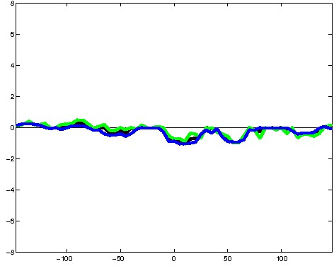
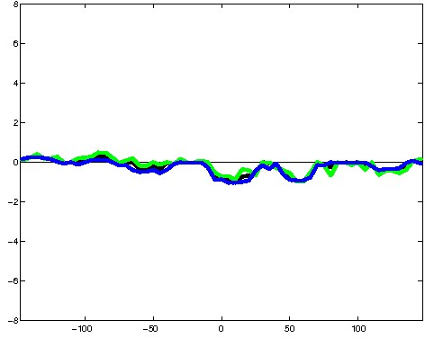
; picked in K562 (state 7:EnhWF, DNase); matched; chr2:98,334,089-98,334,383 (295bp)") 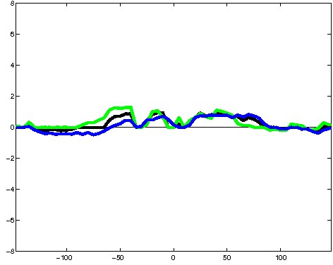
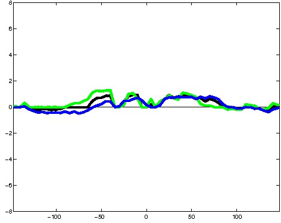
; picked in K562 (state 7:EnhWF, DNase); matched; chr19:52,237,089-52,237,383 (295bp)") 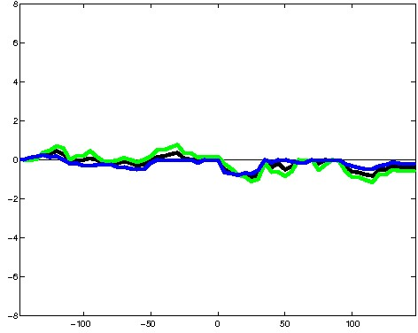
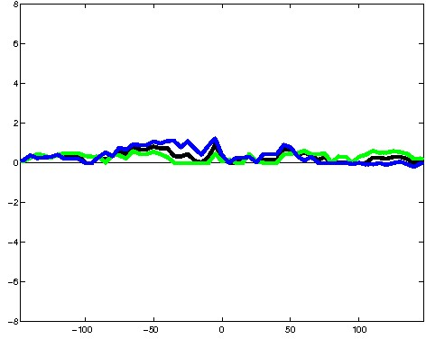
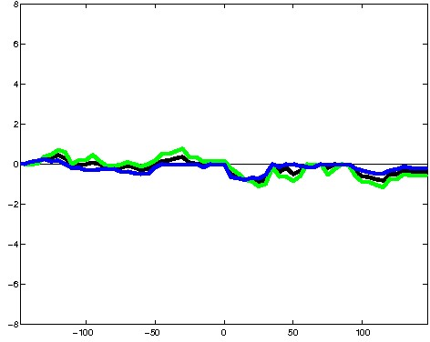
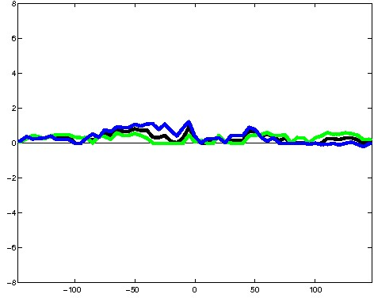
; picked in K562 (state 7:EnhWF, DNase); matched; chr2:46,550,009-46,550,303 (295bp)") 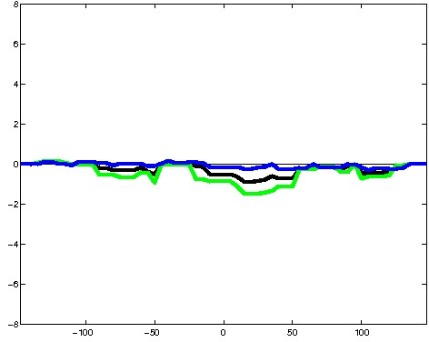
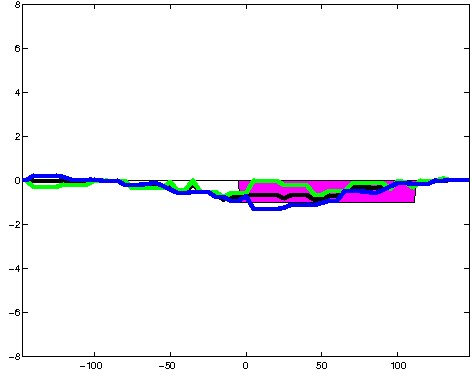
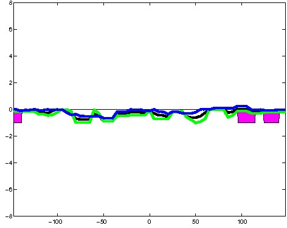
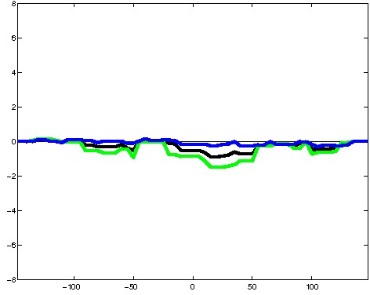
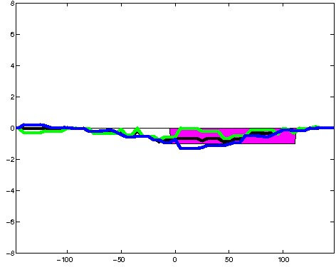
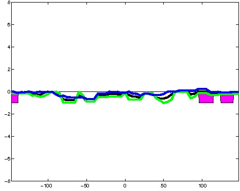
; picked in K562 (state 7:EnhWF, DNase); matched; chr10:76,997,229-76,997,523 (295bp)") 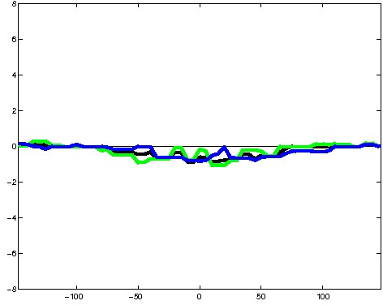
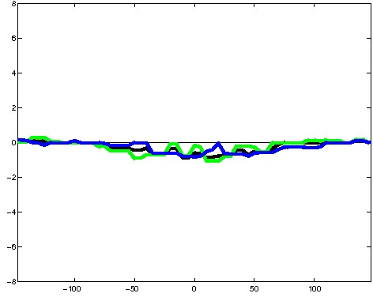
; picked in K562 (state 7:EnhWF, DNase); matched; chr5:77,795,289-77,795,583 (295bp)")
; picked in K562 (state 7:EnhWF, DNase); matched; chr22:29,281,949-29,282,243 (295bp)")
; picked in K562 (state 7:EnhWF, DNase); matched; chr5:54,036,869-54,037,163 (295bp)") 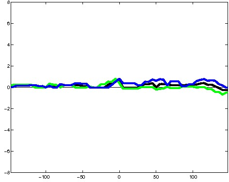
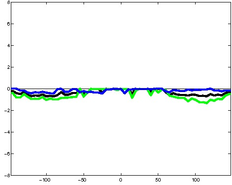
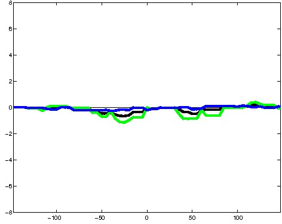
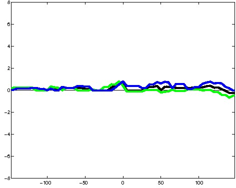
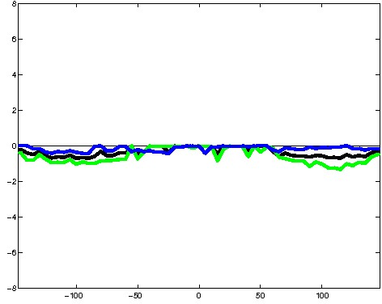
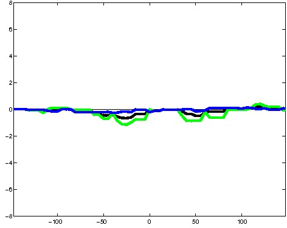
; picked in K562 (state 7:EnhWF, DNase); matched; chr11:33,991,169-33,991,463 (295bp)")
; picked in K562 (state 7:EnhWF, DNase); matched; chr6:106,438,109-106,438,403 (295bp)")
; picked in K562 (state 7:EnhWF, DNase); matched; chr6:16,324,929-16,325,223 (295bp)")
; picked in K562 (state 7:EnhWF, DNase); matched; chr16:53,462,609-53,462,903 (295bp)") 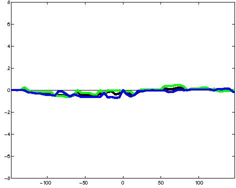
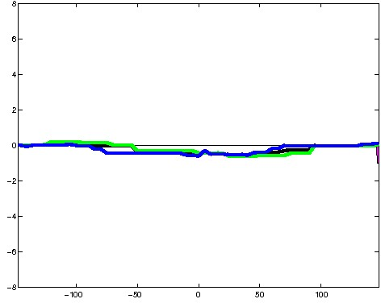
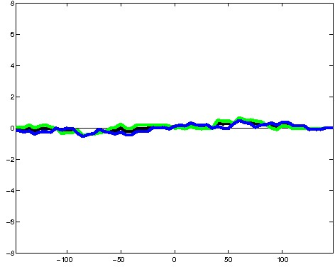
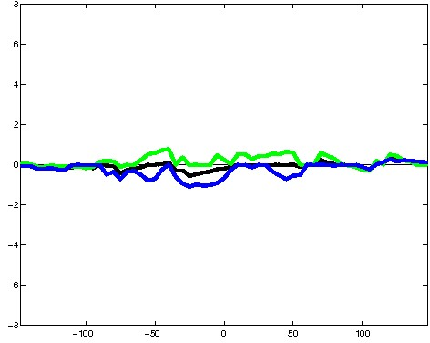
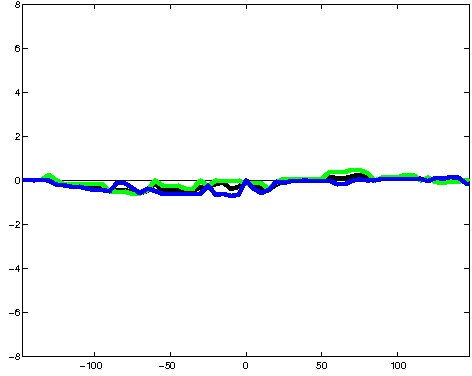
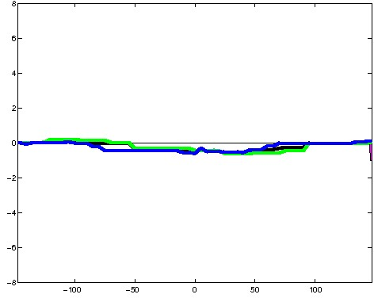
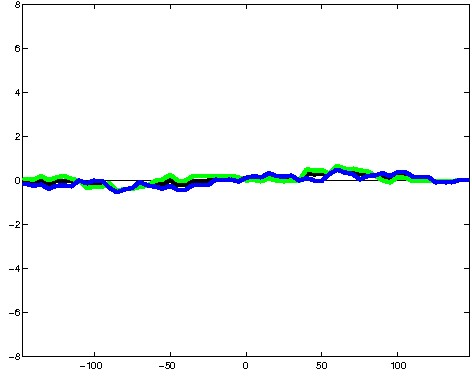
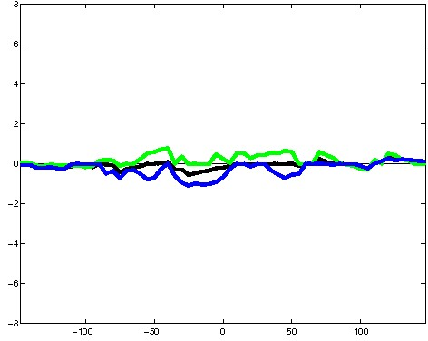
; picked in K562 (state 7:EnhWF, DNase); matched; chr12:110,870,289-110,870,583 (295bp)") 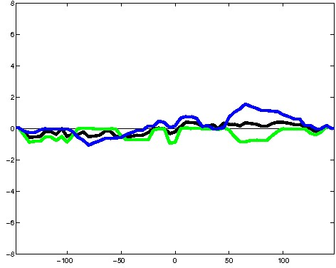
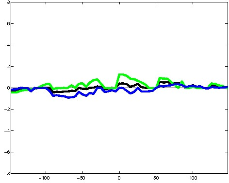
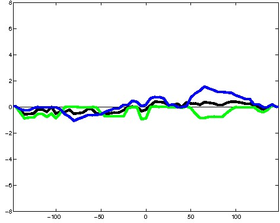
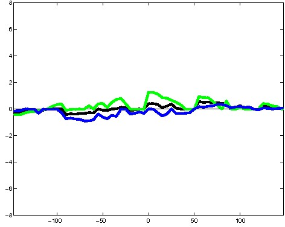
; picked in K562 (state 7:EnhWF, DNase); matched; chr1:162,682,569-162,682,863 (295bp)") 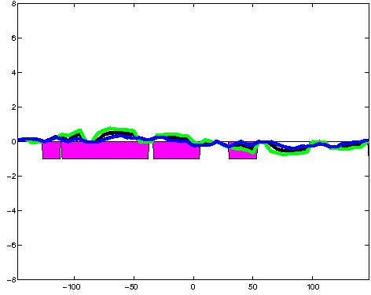
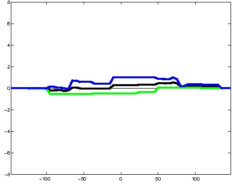
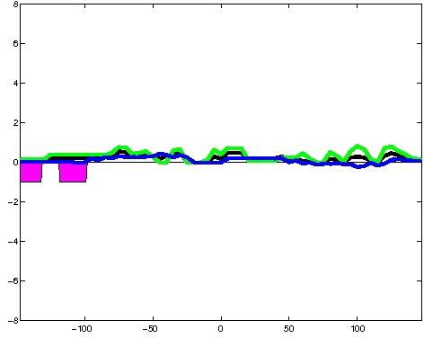
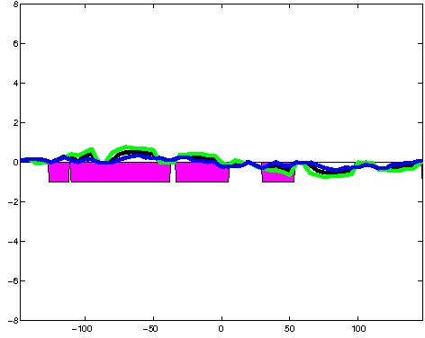
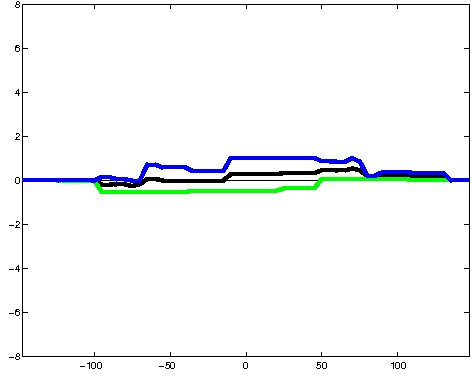
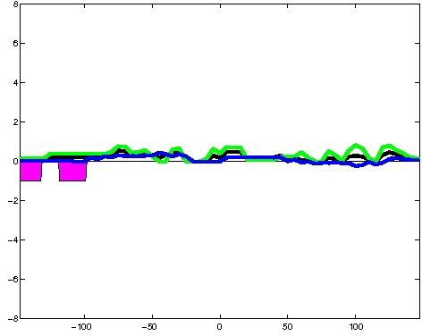
; picked in K562 (state 7:EnhWF, DNase); matched; chr3:141,581,169-141,581,463 (295bp)")
; picked in K562 (state 7:EnhWF, DNase); matched; chr12:123,762,869-123,763,163 (295bp)")
; picked in K562 (state 7:EnhWF, DNase); matched; chr8:125,909,729-125,910,023 (295bp)") 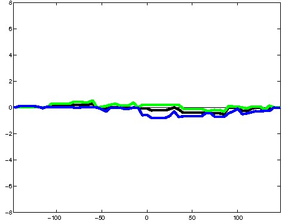
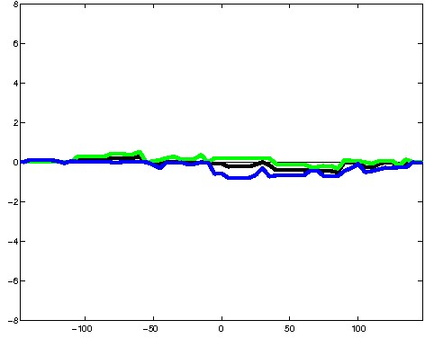
; picked in K562 (state 7:EnhWF, DNase); matched; chr3:156,525,849-156,526,143 (295bp)")
; picked in K562 (state 7:EnhWF, DNase); matched; chr1:157,275,129-157,275,423 (295bp)") 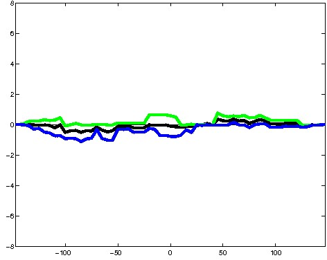
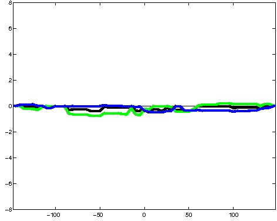
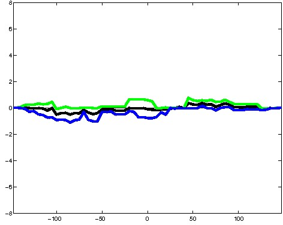
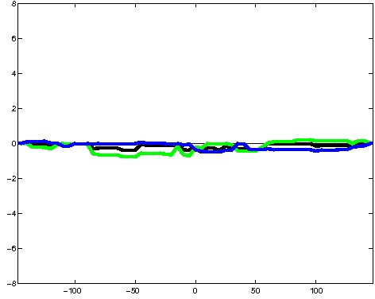
; picked in K562 (state 7:EnhWF, DNase); matched; chr2:68,705,849-68,706,143 (295bp)") 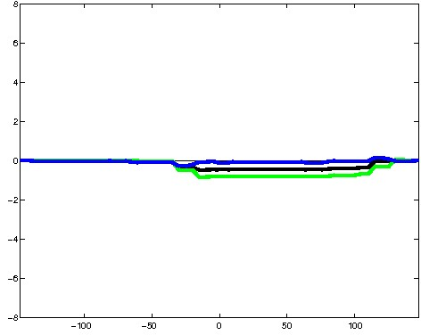
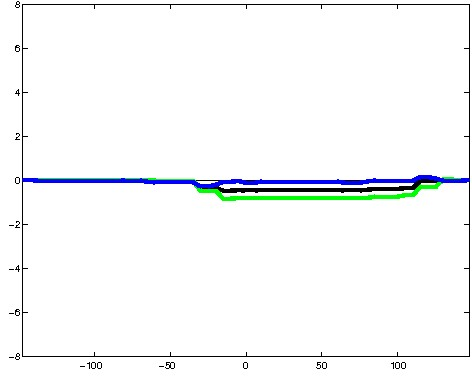
; picked in K562 (state 7:EnhWF, DNase); matched; chr11:17,175,989-17,176,283 (295bp)")
; picked in K562 (state 7:EnhWF, DNase); matched; chr6:6,726,229-6,726,523 (295bp)") 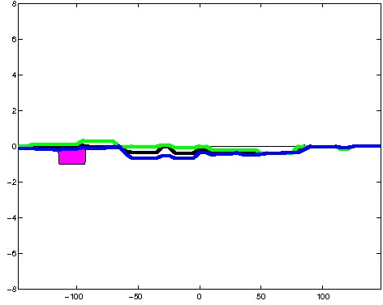
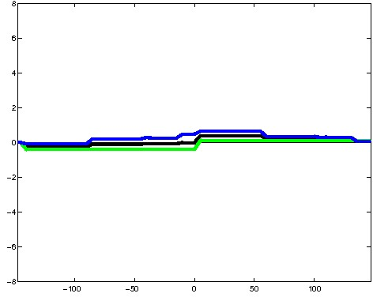


; picked in K562 (state 7:EnhWF, DNase); matched; chr2:170,651,409-170,651,703 (295bp)")
; picked in K562 (state 7:EnhWF, DNase); matched; chr16:68,903,409-68,903,703 (295bp)")
; picked in K562 (state 7:EnhWF, DNase); matched; chr9:71,443,309-71,443,603 (295bp)") 

; picked in K562 (state 7:EnhWF, DNase); matched; chr1:174,000,549-174,000,843 (295bp)")
; picked in K562 (state 7:EnhWF, DNase); matched; chr10:76,623,469-76,623,763 (295bp)")
; picked in K562 (state 7:EnhWF, DNase); matched; chr17:28,041,349-28,041,643 (295bp)") 


; picked in K562 (state 7:EnhWF, DNase); matched; chr2:45,782,009-45,782,303 (295bp)") 

; picked in K562 (state 7:EnhWF, DNase); matched; chr17:47,723,989-47,724,283 (295bp)")
; picked in K562 (state 7:EnhWF, DNase); matched; chr10:62,044,049-62,044,343 (295bp)")
; picked in K562 (state 7:EnhWF, DNase); matched; chr3:38,730,949-38,731,243 (295bp)")
; picked in K562 (state 7:EnhWF, DNase); matched; chr6:7,061,249-7,061,543 (295bp)")
; picked in K562 (state 7:EnhWF, DNase); matched; chr1:145,152,909-145,153,203 (295bp)") 

; picked in K562 (state 7:EnhWF, DNase); matched; chr1:211,926,509-211,926,803 (295bp)") 

; picked in K562 (state 7:EnhWF, DNase); matched; chr9:135,826,889-135,827,183 (295bp)") 


; picked in K562 (state 7:EnhWF, DNase); matched; chr7:12,970,349-12,970,643 (295bp)") 


; picked in K562 (state 7:EnhWF, DNase); matched; chr5:95,016,409-95,016,703 (295bp)")